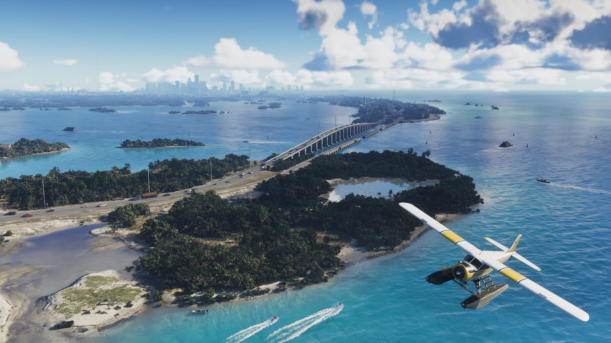

© Rockstar Games / Take-Two Interactive
Leonida vs Floride : toutes les inspirations réelles de la carte
EN BREF
- Rockstar a mené des repérages à Miami, dans les Everglades et les Keys, mais aussi dans le nord de la Floride
- Le nord de la carte emprunte aussi à la Géorgie
- Chaque quartier a un modèle réel, de Brickell à Little Haiti
- Toutes les fiches de lieux sont à lire sur notre page Maps
GTA 6 se déroule dans l'État fictif de Leonida, transposition de la Floride avec, au nord, des touches de Géorgie. Rockstar a expliqué avoir mené de longs repérages à Miami, dans les Everglades et dans les Keys, mais aussi dans les villes et campagnes du nord de l'État. Voici, région par région, les lieux réels qui ont servi de modèle (d'après le GTA Wiki).
Vice City et son agglomération
| Dans le jeu | Dans la réalité |
|---|---|
| Vice City | Miami (version moderne) |
| Vice Beach | Miami Beach |
| Ocean Beach | South Beach |
| Washington Beach | Mid-Beach |
| Downtown | Downtown Miami |
| Tequesta | Brickell |
| Peacock Bay | Coconut Grove |
| La Perle | Little Haiti |
| Little Cuba | Little Havana |
| Tisha-Wocka | Opa-locka |
| Crosstown | Overtown |
| Stockyard | Wynwood |
| Rockridge | Riverside |
| PortViceCity | PortMiami |
| Aéroport VCI | Aéroport international de Miami |
| Hamlet | Homestead |
Les Keys et les marais
Key Lento reprend Key Largo (« lento » et « largo » sont deux indications de tempo lent) ; les Leonida Keys sont directement les Keys de Floride. La Daiquiri Republic parodie la Conch Republic de Key West. Les Grassrivers s'inspirent des Everglades, avec un nom qui rappelle le livre « The Everglades: River of Grass ».
L'ouest et l'intérieur
Port Gellhorn emprunte à Panama City, son port à celui de Tampa. Ambrosia est une transposition de Clewiston, capitale sucrière de Floride, au bord du lac Leonida (le lac Okeechobee). Le Thrillbilly Mud Club copie presque trait pour trait un parc tout-terrain du comté de Charlotte.
Le nord, entre Floride et Géorgie
Le parc national de Mount Kalaga mêle le nord de la Floride et la Géorgie : son canyon rappelle le Providence Canyon, son nom vient d'un mot cherokee signifiant « est » ou « lever du soleil », et l'État voisin de Gloriana est une transposition de la Géorgie.
Aussi dans les comtés
Les comtés suivent la même logique : Vice-Dale ← Miami-Dade, Leonard ← Broward, Mariana ← Monroe, Kelly ← Collier et Lee. Même les forces de l'ordre s'en inspirent : voir la Vice-Dale Police Department (Miami-Dade Sheriff's Office) ou la police routière (Florida Highway Patrol).